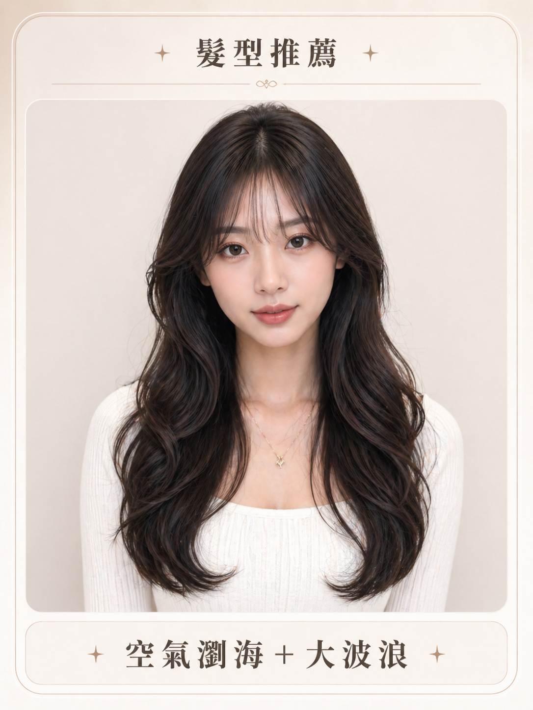
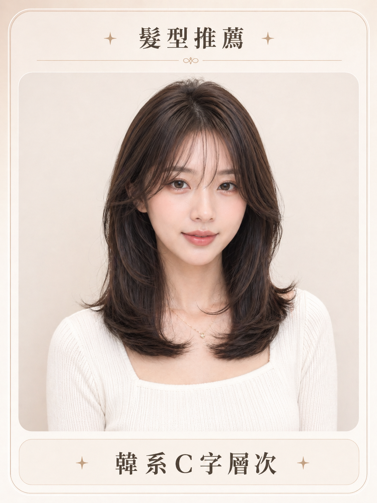
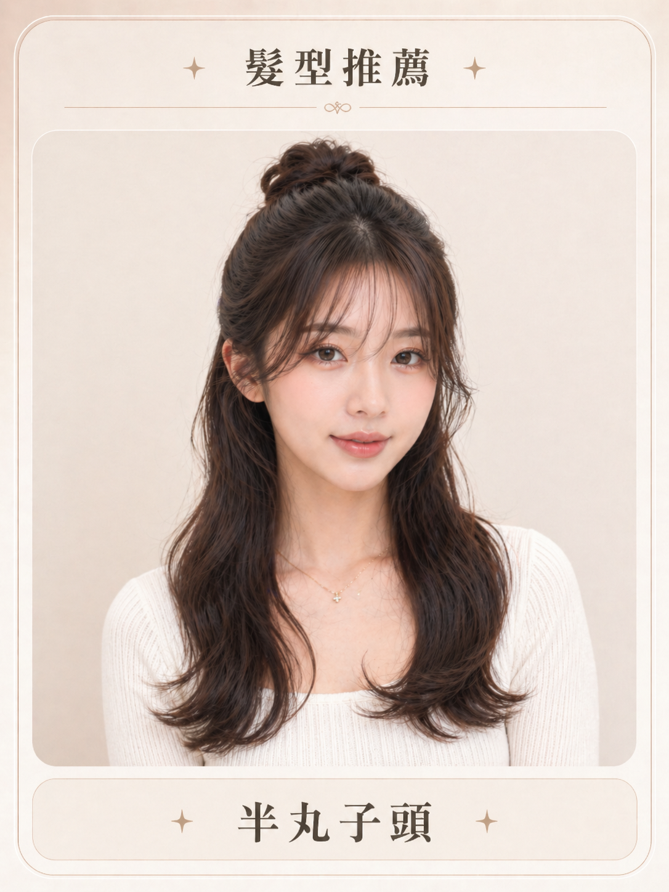
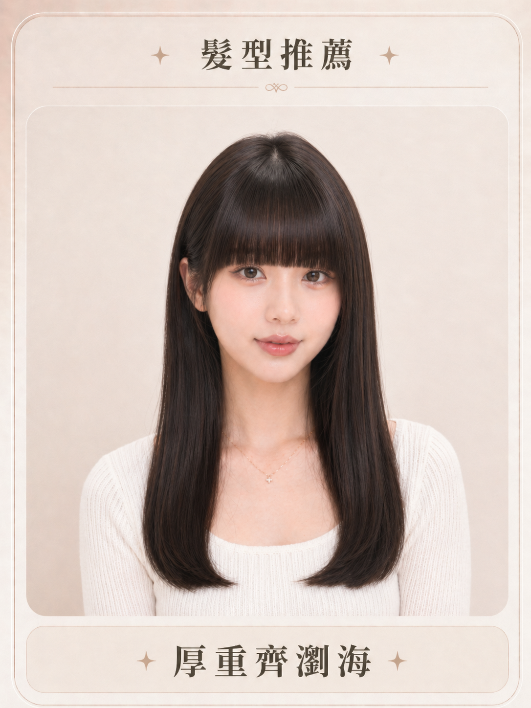
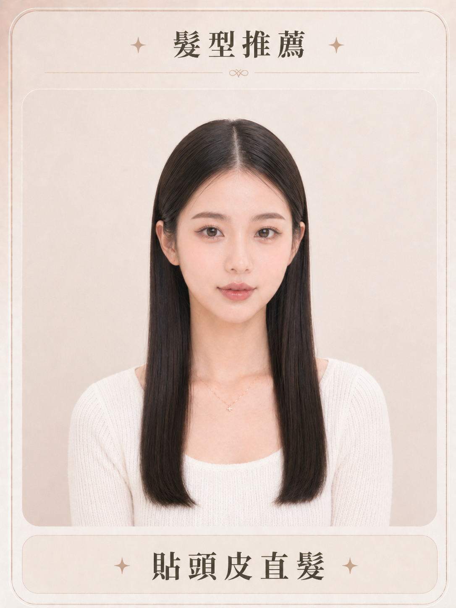
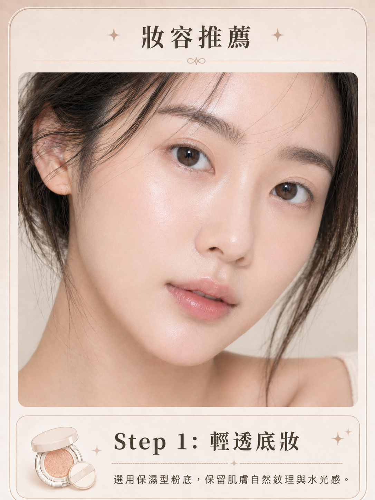
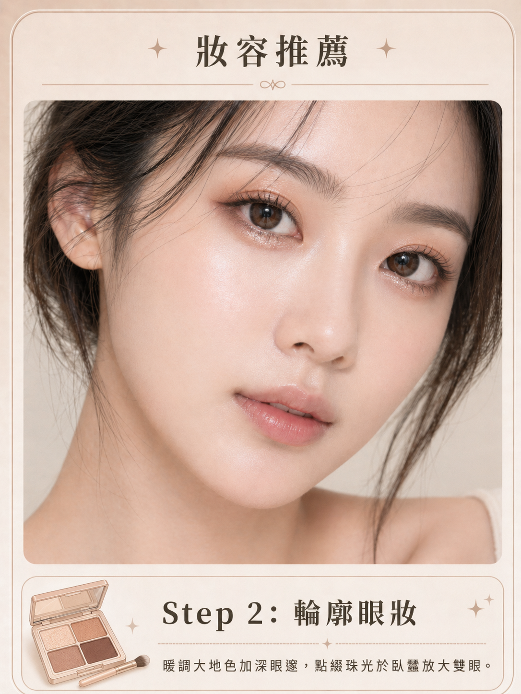
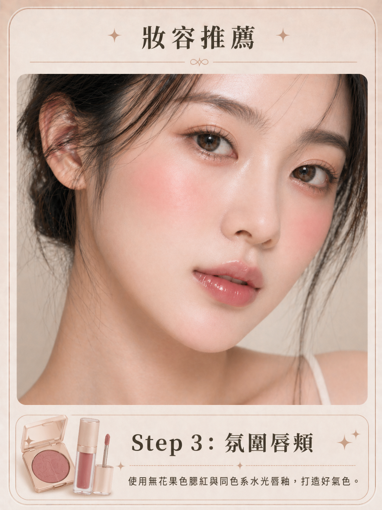

你的個人化造型報告
依照您的特徵與偏好，為您量身打造的最佳造型指南。
尚未產生結果，請先完成上方問卷。

Your Portrait
專屬風格設定
臉型：分析中...
膚色：分析中...
髮長：分析中...
風格：分析中...
場合：分析中...
推薦髮型解析
最適合 (Best Fit)

空氣瀏海大波浪
韓系C字層次
半丸子頭不建議 (Avoid)

厚重齊瀏海
貼頭皮直髮推薦髮色盤
霧感奶茶棕
輕盈透明感，提亮亞洲膚色。
焦糖暖棕色
溫柔浪漫，視覺髮質更柔順。
冷光黑茶色
低調高級感，適合正式場合。
妝容步驟解析

Step 1: 輕透底妝
選用保濕型粉底，保留肌膚自然紋理與水光感。

Step 2: 輪廓眼妝
暖調大地色加深眼邃，點綴珠光於臥蠶放大雙眼。

Step 3: 氛圍唇頰
使用無花果色腮紅與同色系水光唇釉，打造好氣色。
總結建議
建議以長度在鎖骨以下，層次感為主。瀏海能柔化臉部線條，提升親和力。捲度帶來柔和感，整體更有氛圍感。